ResolveAI helps an on-call engineer investigate an incident. It gathers evidence from read-only systems, proposes root causes with citations, and drafts a root cause analysis (RCA) for a person to verify. It never changes anything in the systems it inspects.
This document describes the main branch of the public resolveai-agentic repository, created on 2 November 2026 from main of resolveai. For design rationale and the future plan, see docs/ResolveAI-Architecture-and-Design.pdf.
Code gathers the evidence; the model only reasons over it. Stages that collect logs, deployments and past incidents use no AI.
Every piece of evidence has a typed ID, such as log:… or mcp:3. The server removes any citation it cannot match to a real record.
Connections to monitored systems are read-only. Each system sits behind its own MCP server with fixed tools. No tool runs arbitrary SQL or shell commands.
A person decides. An incident only becomes verified after someone records the cause and reviews the RCA.
The default mode uses no AI at all. Recorded mode replays written analyses, so what you see in a demo does not prove real model quality.
| Area | State |
|---|---|
| Blazor Server UI and HTTP API | Working |
| Investigation pipeline in recorded mode | Working |
| Four MCP servers with 17 tools | Working, including real SQL Server checks |
| RCA drafting, editing, versions, Markdown export | Working |
| Automated tests | 217 cases, all passing in CI on 2 November 2026: 203 unit and API, 14 browser |
| Docker image | Built and health-checked in CI |
| Live Claude | Run twice on 2 November 2026 through an Anthropic-compatible gateway: INC-1046 and INC-1042, both completed. Quality has not been evaluated. Automated tests use a fake API |
| GitHub CI | Passing on GitHub |
| User accounts and roles | Not built; a shared access code gates paid runs |
| Data | Synthetic, except optional SQL Server checks |
| Day | Do this | Sections |
|---|---|---|
| 1 | Run the app and the tests. Click through every page. | 2, 3 |
| 2 | Read how the parts fit. Follow one investigation through the code. | 4, 5 |
| 3 | Read the key components, the data model and the configuration. | 6, 7, 8 |
| 4 | Make a practice change: add a tool to a scratch branch, using the task guide. | 9, 10 |
| 5 | Reset demo data, break something on purpose and diagnose it. Read the security rules and the known traps. | 11, 12, 13 |
Section 14 ends with a checklist to confirm the handover is complete.
You need only the .NET 10 SDK to run the app. It starts on http://127.0.0.1:8787, seeds an empty database on first start, and needs no API key.
| Tool | Needed for | Required? |
|---|---|---|
| .NET 10 SDK | Building, running and testing | Yes |
| Git | Source, and the deploys server | Yes |
| Docker | Container run and Linux tests | Optional |
| SQL Server (local) | Real database checks and MSSQL_TEST=1 tests | Optional |
| Node | Only to regenerate wwwroot/app.css | Optional |
| Anthropic API key | Live mode. Each run costs money, so ask before using one | Optional |
git clone https://github.com/ratnkumarsingh/resolveai-agentic.git
cd resolveai-agentic
dotnet run --project src/ResolveAI.AppOpen http://localhost:8787, pick INC-1042, and select Run investigation.
curl http://localhost:8787/api/config # mode should be recorded
curl http://localhost:8787/api/systems # systems should show status connected
curl "http://localhost:8787/api/incidents" # should list INC-1042The database system shows as off until you set up SQL Server. That is expected (section 8).
cp .env.example .env # optional, for live runs
docker compose up -d --build
docker compose ps # wait for "healthy"The port is published on 127.0.0.1 only. Data lives in the named volume resolveai-data and survives rebuilds.
dotnet test tests/ResolveAI.Tests # no external services needed
dotnet test tests/ResolveAI.E2E # real browser, temporary database, free port
MSSQL_TEST=1 dotnet test tests/ResolveAI.Tests # also uses local SQL Server
docker build --target test . # same unit tests on LinuxBrowser tests need Chromium installed once: pwsh tests/ResolveAI.E2E/bin/Debug/net10.0/playwright.ps1 install.
If the app is already running, stop it before building. A running process can lock the build output on Windows.
The app has three pages in its top menu, plus an incident page with seven tabs. These screenshots come from recorded mode on demo data, using INC-1042 as the example.
Two badges at the top right appear on every page. They show the data source and whether a model is being called. Check them first when something looks odd.
/)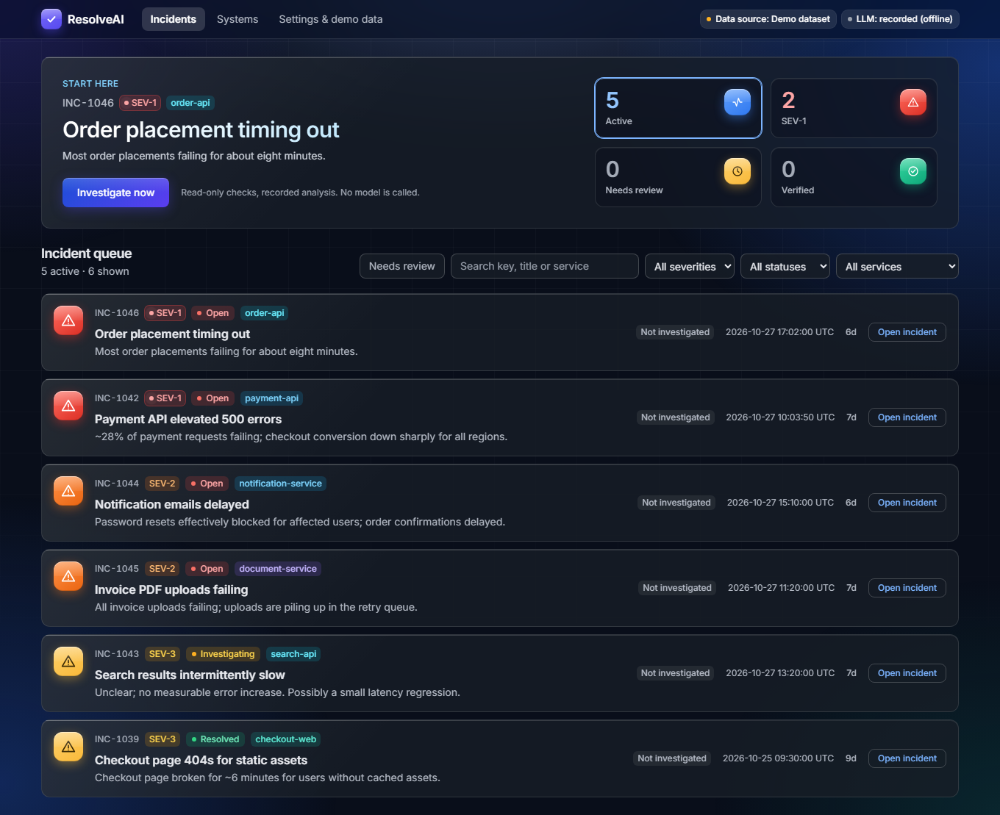
This is the home page. Filter by severity, status or service, search by key or title, or use Needs review to see incidents waiting on a person. Each row shows one of three review states: Not investigated, Needs review or Verified.
The six demo incidents teach different lessons, so try more than one:
| Incident | Service | Analysis used in recorded mode |
|---|---|---|
| INC-1042 | payment-api | Written analysis: connection pool regression after a release |
| INC-1045 | document-service | Written analysis that adapts to the checks that ran |
| INC-1046 | order-api | Written analysis; uses real SQL Server blocking when set up |
| INC-1043 | search-api | Rule-based |
| INC-1044 | notification-service | Rule-based |
| INC-1039 | checkout-web | Rule-based; already resolved |
/incidents/{id})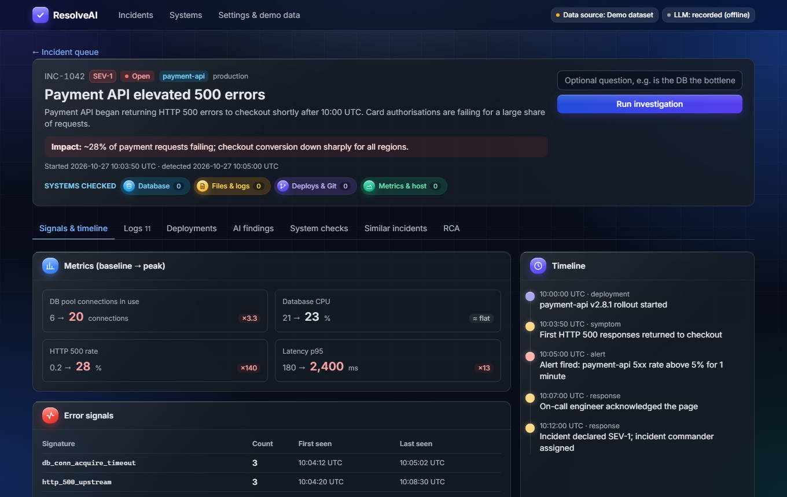
The header gives the summary and impact, and holds Run investigation with an optional question. The Systems checked strip counts the checks made against each system. The first tab shows metrics, the timeline and error signals, all taken from records with no AI involved.
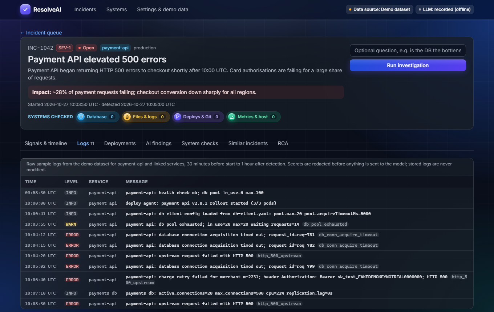
This shows raw logs from 30 minutes before the start to one hour after detection. Line 10:06:40 contains a deliberately fake token, sk_test_FAKEDE…. You see it here because stored data is never changed. It is redacted only in the copy sent to the model, which is a useful thing to verify yourself.
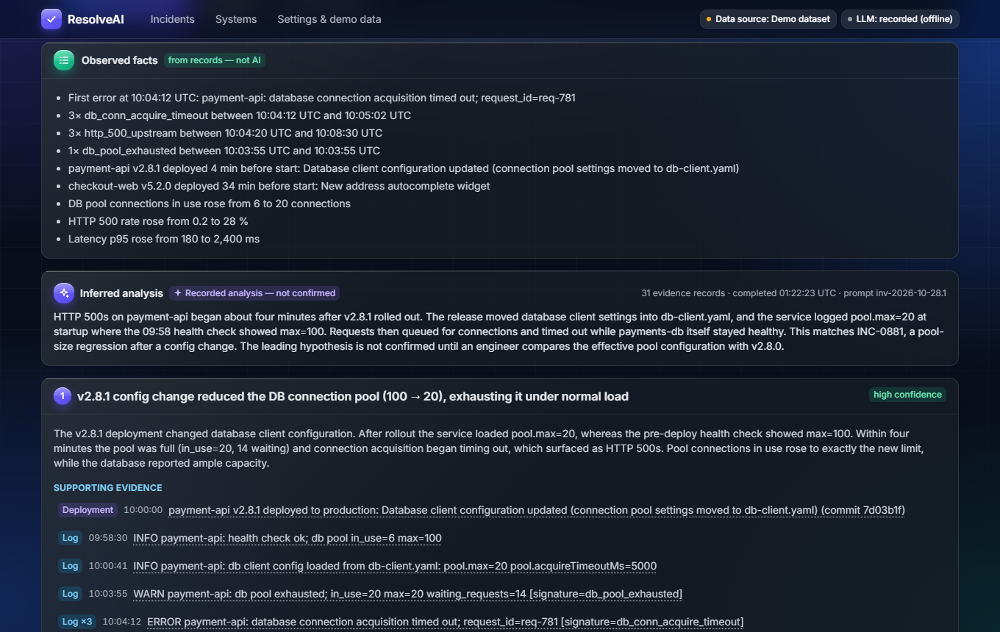
This tab fills in after a run. Its layout matters: Observed facts come from records, and Inferred analysis comes from the provider. The label here reads Recorded analysis, so no model produced it. Below this sits How this was produced, a trace of each stage with timings and counts.
Each hypothesis is laid out as a case to check:
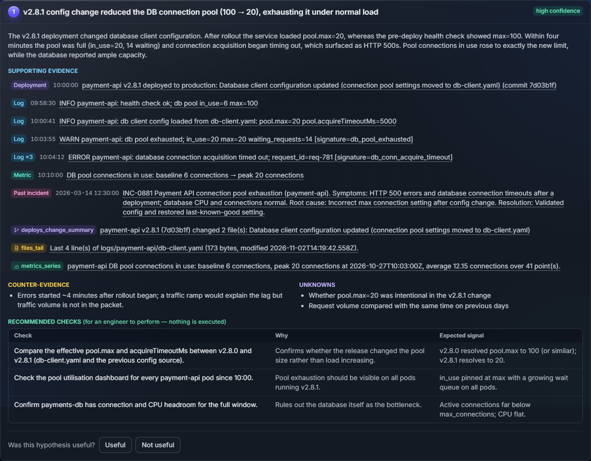
Select an evidence row to jump to its source record. Recommended checks are for a person to perform, and nothing is executed.
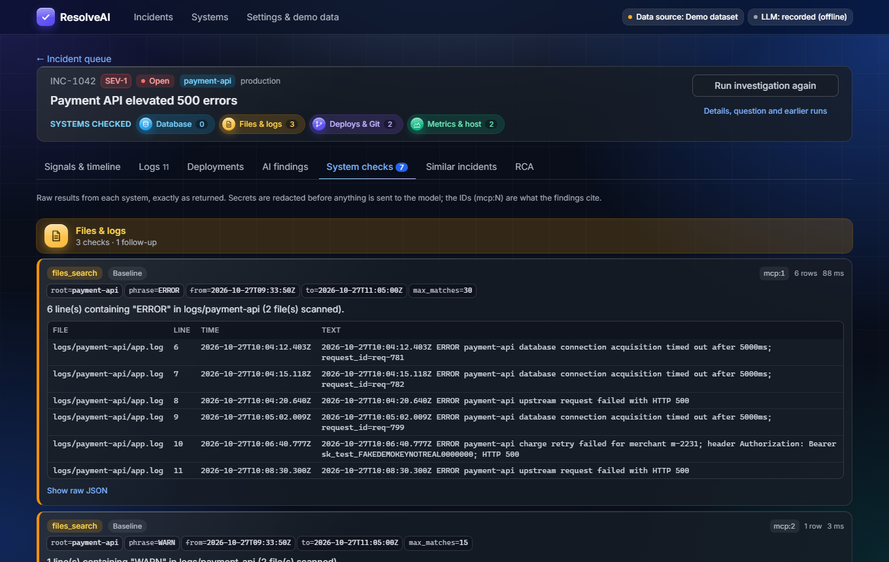
This shows the raw result of every MCP call, grouped by system. Each has a label of Baseline or Follow-up, its arguments, and its mcp:N ID. Those IDs are what the findings cite. Use this tab first when you doubt a finding.
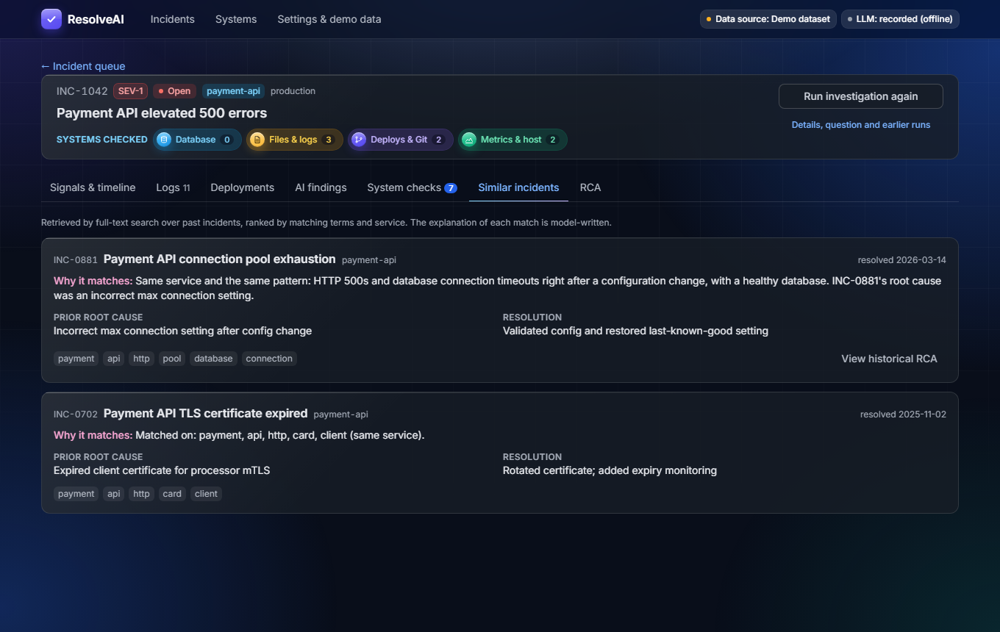
Code chooses these using full-text search. The model can only write the Why it matches text, so it cannot invent a past incident.
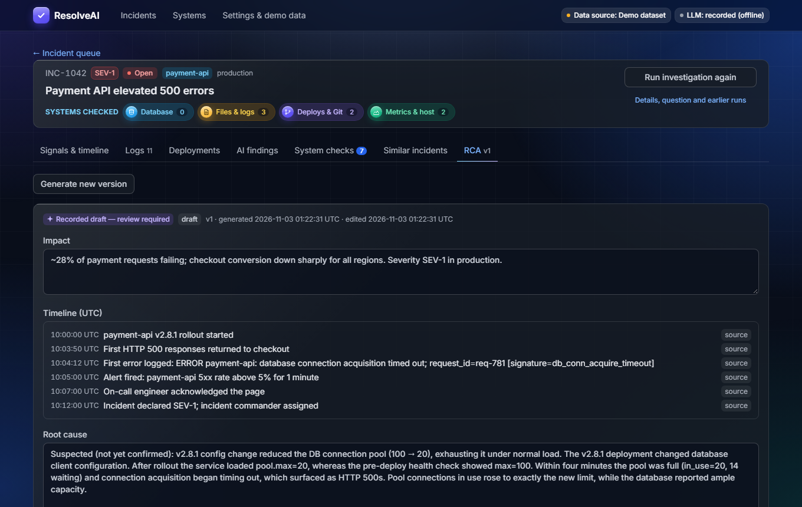
Generate a draft after a run completes, then edit it and mark it reviewed. Generating again creates a new version, so it never overwrites someone's edits. Export it as Markdown by copying or downloading.
/systems)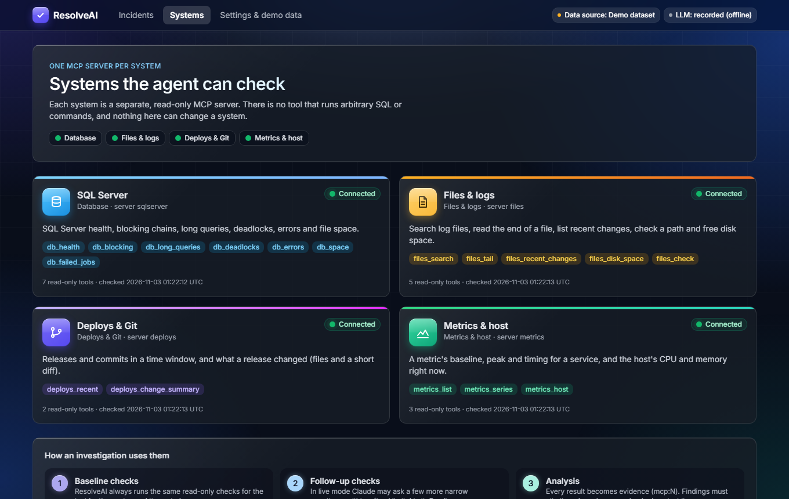
This shows each MCP server's status and tools. On a fresh clone SQL Server shows as off; this machine has it turned on in its local mcp.config.json.
/settings)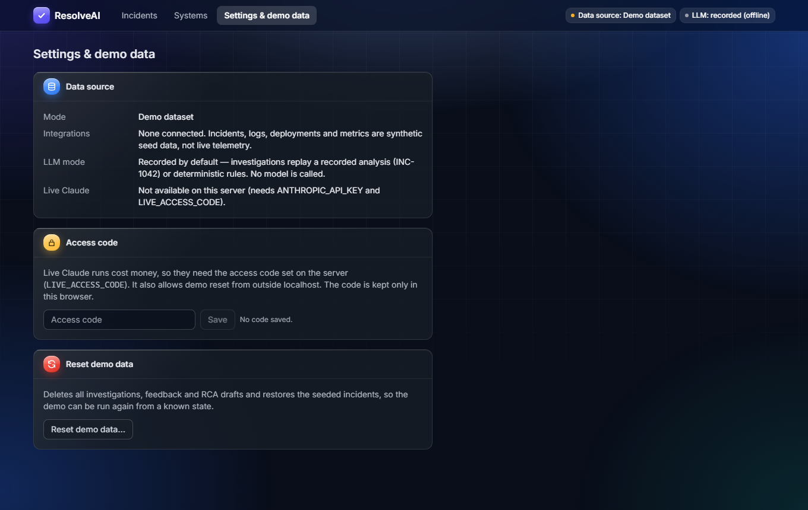
This holds the access code for live runs and Reset demo data, which deletes all investigations, feedback and RCA drafts. Its text still names only INC-1042 as a recorded analysis; three incidents have one.
The UI and the API are two doors into the same AppService, so a rule added there applies to both. Everything runs on one machine: one web process and four child processes.
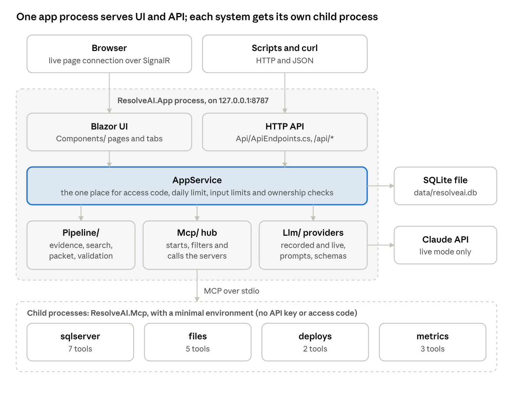
The UI calls AppService directly instead of going over HTTP. The API exists for scripts and the RCA export. The child processes start when the app boots, and a system that fails to start never stops the app.
| Project | Type | Holds |
|---|---|---|
src/ResolveAI.Contracts | Library | Shared DTOs, JSON rules, evidence IDs |
src/ResolveAI.Mcp | Executable | The four MCP servers, chosen by argument: ResolveAI.Mcp files |
src/ResolveAI.App | Web app | UI, API, pipeline, providers, data access |
| If you need to change | Look in |
|---|---|
| App startup and middleware | src/ResolveAI.App/Program.cs |
| Settings and environment variables | AppSettings.cs |
| How services are wired together | AppDeps.cs |
| HTTP routes and error mapping | Api/ApiEndpoints.cs |
| Access, limits and ownership rules | Services/AppService.cs |
| The investigation stages | Services/Investigations.cs |
| RCA generation and editing | Services/Rca.cs |
| Queue listing and filters | Services/Incidents.cs |
| Evidence gathering | Pipeline/EvidenceLoader.cs |
| Similar-incident search and scoring | Pipeline/Similar.cs |
| Packet building and bounds | Pipeline/Packet.cs |
| Redaction rules | Pipeline/Sanitizer.cs |
| Checks on model output | Pipeline/Validate.cs |
| Prompts and output schemas | Llm/Prompts.cs, Llm/Schemas.cs |
| Recorded analyses | Llm/RecordedProvider.cs |
| Real Claude calls | Llm/ClaudeProvider.cs |
| Which checks every run performs | Mcp/Baseline.cs |
| Starting and calling MCP servers | Mcp/Hub.cs |
| A tool's behaviour | src/ResolveAI.Mcp/*Server.cs |
| Tables | Data/Migrations/*.sql |
| Demo incidents | Data/Seed.cs |
| Pages and tabs | Components/Pages, Components/Incident |
| Styles | Styles/app.css, which generates wwwroot/app.css |
Paths in the table are inside src/ResolveAI.App unless they start with src/. Other top-level folders are tests/, demo-systems/ (synthetic logs, deploy feed, metrics and SQL scripts), and tools/css/.
A run returns HTTP 202 immediately, then continues on a background task through seven stages. Only stages 5 and 6 depend on the provider. The best way to learn this is to set a breakpoint in Investigations.Run and step through INC-1042 in recorded mode.
AppService.StartInvestigation makes these checks in order:
The incident must exist, or the call returns 404.
The question must be 500 characters or fewer, and the mode must be recorded or live.
If this incident already has a queued or running investigation, its ID is returned and no second run starts.
A live run needs the access code and must be under the daily limit, or the call returns 400, 403 or 429.
Investigations.Start inserts a row with status queued and starts the background work.
These are all in Investigations.Run, in Services/Investigations.cs.
| # | Stage | Code | AI? | If it fails |
|---|---|---|---|---|
| 1 | Gather logs, deployments, metrics, timeline, runbooks | Pipeline/EvidenceLoader.cs | No | Run fails |
| 2 | Search incident history | Pipeline/Similar.cs | No | Run fails |
| 3 | Baseline system checks | Mcp/Baseline.cs, Mcp/Hub.cs | No | A failed check is recorded; the run continues |
| 4 | Build the evidence packet | Pipeline/Packet.cs, Pipeline/Sanitizer.cs | No | Run fails |
| 5 | Follow-up checks | The provider, then the hub | Live only | Noted as an issue; analysis still runs. Limit 120 s |
| 6 | Analyse | ILlmProvider.Investigate | Live only | Malformed output retries once, then the run fails. Limit 180 s |
| 7 | Validate, score and rank | Pipeline/Validate.cs | No | Run fails |
Results are then stored in one transaction with status completed, including hypotheses, evidence links, similar incidents and the trace. A failed run stores a safe, readable message.
The page polls the investigation every 1.5 seconds and shows the current stage text. On completion the tabs fill in. To follow it from the API:
curl -X POST http://localhost:8787/api/incidents/INC-1042/investigations \
-H "Content-Type: application/json" -d '{}'
# returns an investigation id, with HTTP 202
curl http://localhost:8787/api/investigations/<id>Evidence: 11 log lines, including pool.max=20 loaded straight after the v2.8.1 rollout, and a health check showing max=100 before it.
History: INC-0881, a pool-size regression after a config change, ranks first because it matches on terms and service.
Baseline checks: files_search finds the errors, and deploys_recent and metrics_series find the release and the pool rising from 6 to 20.
Packet: the fake bearer token in the 10:06:40 log line is redacted here.
Follow-ups: recorded mode replays two calls: deploys_change_summary shows what changed, and files_tail reads db-client.yaml.
Analysis: the written analysis says v2.8.1 reduced the pool from 100 to 20.
Validation: each citation is matched against the packet. The result stays labelled as not confirmed.
Person: an engineer performs the recommended checks, records the verified cause, and generates the RCA.
| Operation | Limit |
|---|---|
| Analysis stage; RCA draft | 180 s each |
| Follow-up stage | 120 s |
| One Claude HTTP request | 90 s, with 2 retries |
| MCP server start | 20 s |
| One tool call, at the hub / inside the server | 15 s / 10 s |
| Git command | 8 s, with a 4 MB output cap |
| SQL connect / command | 5 s / 8 s |
If the app restarts during a run, startup marks that run as failed. There is no resume, so run it again.
Each component below does one job, and most can be understood by reading a single file of under 250 lines. RecordedProvider.cs and Investigations.cs are the two long ones.
Pipeline/EvidenceLoader.cs is deterministic. For one incident it loads:
Logs: the affected service or linked to the incident, from 30 minutes before the start to 1 hour after detection, up to 200 rows.
Deployments: the same service in the previous 48 hours, and other services within 1 hour either side.
Other records: metric snapshots, timeline events, and up to 5 runbooks or guides.
Pipeline/Similar.cs builds search terms from the title, description, error signatures and change summaries, then runs an FTS5 query.
score = -bm25 x 10 + matched terms + (3 if same service)
keep = at least 2 matched terms, at least 35% of the best score, top 5Pipeline/Packet.cs builds the only thing the model may see. Each item has a typed ID, and those IDs are the citation vocabulary.
| Prefix | Source | Prefix | Source |
|---|---|---|---|
log: | Log group | doc: | Runbook or guide |
dep: | Deployment | hist: | Past incident |
met: | Metric snapshot | tl: | Timeline event |
mcp:N | System check result |
Log lines that differ only by IDs or numbers collapse into one group with a count. The packet is capped at 40 log groups and 40,000 characters. Excerpts stop at 600 characters, or 1,200 for tool results, and information logs are dropped first.
Pipeline/Sanitizer.cs runs when the packet is built. It covers URL credentials, Bearer and Basic values, sk_/pk_/rk_ keys, sk-ant-, AKIA, gh*_ tokens, password=-style values, email addresses and card-like numbers.
Stored records are not changed, so the UI shows raw data. Redaction is pattern-based and a secret in an unusual format can pass through.
Pipeline/Validate.cs treats model output as untrusted.
| Check | Behaviour |
|---|---|
| Citations | IDs not in the packet are removed. A hypothesis with none left is marked speculative and forced to low confidence |
| Unsafe checks | Destructive suggestions such as rm -rf, DROP TABLE or kubectl delete are removed |
| Invented numbers | Numbers with a unit, or of 10 or more, that are not in the evidence are flagged, not deleted |
| Similar incidents | Explanations for anything outside the retrieved candidates are ignored |
| Bounds | 5 hypotheses, 8 items per list, 5 checks |
| Ranking | 2 x confidence (1 to 3) + min(citations, 5) - counter-evidence. Used for order only |
Both implement ILlmProvider, so the rest of the pipeline does not know which is in use.
RecordedProvider | ClaudeProvider | |
|---|---|---|
| Network | None | Claude API, model claude-opus-5-5 |
| Cost | Free | Paid; counts against the daily limit |
| Analysis | Written for 3 incidents, rule-based for others | Structured output, effort medium, 16,000 tokens |
| Follow-ups | Replayed from a fixed list | Claude chooses, effort low, 4,000 tokens, default limit 8 |
| Proven by | Tests and demos | Fake API tests, plus two live gateway runs |
Mcp/Hub.cs starts each enabled server, keeps only tools marked readOnlyHint, routes calls, and restarts a crashed server once. Mcp/Baseline.cs plans the fixed checks for each run:
db_health, db_blocking, db_errors, db_deadlocks, if the service has a database.
files_search for ERROR and for WARN, in each log folder.
deploys_recent for the service.
metrics_series for each key metric.
All four servers live in src/ResolveAI.Mcp. ToolServer.cs applies input checks, timeouts, read-only annotations and error results to every tool.
| System | Tool | What it does |
|---|---|---|
| Database | db_health | Sessions, blocked requests, top waits, memory and CPU |
| Database | db_blocking | Blocking chains and the head blocker |
| Database | db_long_queries | Requests running at least n seconds |
| Database | db_deadlocks | Deadlocks from the system_health session |
| Database | db_errors | Errors from extended event sessions |
| Database | db_space | File sizes and log reuse for an allowed database |
| Database | db_failed_jobs | Failed SQL Agent job steps |
| Files | files_search | Plain-text search, optionally in a time window |
| Files | files_tail | Last lines of a text file |
| Files | files_recent_changes | Files modified since a time |
| Files | files_disk_space | Free and used space |
| Files | files_check | Exists, size, modified time, readable, writable |
| Deploys | deploys_recent | Feed deployments and git commits in a window |
| Deploys | deploys_change_summary | Files changed and a short patch |
| Metrics | metrics_list | Metric names for a service |
| Metrics | metrics_series | Baseline, peak and timing in a window |
| Metrics | metrics_host | Current CPU, memory and uptime |
Every tool has these limits: 10 s timeout, 24-hour window, 200 rows, 64,000 characters of output and 500 characters per value.
To use the servers from Claude Code or Claude Desktop, copy .mcp.json.example to .mcp.json. That is a quick way to explore one tool in isolation.
All application data is in one SQLite file: 14 tables, two full-text search tables and a _migrations table. Lists and structured values are stored as JSON text in columns.
| Table | Holds | Notes |
|---|---|---|
incidents | The incident record | Parent of most data |
log_events | Raw logs | A trigger rejects any update |
deployments | Releases | Optional link to an incident |
metric_snapshots | Baseline and peak values | |
timeline_events | What happened and when | |
knowledge_documents | Runbooks and historical RCAs | Searched through knowledge_fts |
historical_incidents | Past incidents | Searched through historical_fts |
investigations | One row per run | Holds the status, stage, packet, trace and usage |
hypotheses | Candidate causes for a run | |
evidence_links | Citations from a hypothesis | |
investigation_similar_incidents | Matches for a run | Score and reason |
tool_calls | Each MCP call in a run | seq gives the mcp:N number |
feedback | Votes, notes and verified causes | |
rca_drafts | RCA versions | Linked to the incident and the run |
The evidence_packet column keeps exactly what the model saw, so a run stays auditable after the source data changes. IDs are UUID strings; seeded IDs are derived from stable names, so a reset gives identical data.
Investigation: queued, then running, then completed or failed.
Review of an incident: none, pending after a completed run, and verified once a verified cause is recorded and the latest RCA is reviewed. It is computed by a query rather than stored.
Use a copy, or point a temporary instance at its own file so you never touch shared data:
DB_PATH=/tmp/resolveai-test.db API_PORT=8799 dotnet run --project src/ResolveAI.AppJSON uses snake_case, and errors look like { "error": "message" }. An incident's {id} can be a UUID or a key such as INC-1042. Live requests send the access code in the x-access-code header.
| Method and route | Purpose | Notable responses |
|---|---|---|
GET /api/config | Mode, live availability, usage today | |
GET /api/systems | Status and tools per system | |
GET /api/incidents | List, with status, severity, service, q, review, page, page_size | |
GET /api/incidents/{id} | Detail, runs and RCA versions | 404 unknown |
GET /api/incidents/{id}/evidence | Logs, signals, deployments, metrics, timeline, runbooks | 404 unknown |
POST /api/incidents/{id}/investigations | Start a run: {question?, mode?} | 202; 400; 403; 429 |
GET /api/investigations/{id} | Status, hypotheses, trace, tool calls | 404 unknown |
POST /api/investigations/{id}/feedback | Vote, note or verified cause | 201 |
POST /api/incidents/{id}/rca-drafts | Generate an RCA: {investigation_id} | 201; 400 wrong incident; 409 not completed; 502 model error |
GET, PATCH /api/rca-drafts/{id} | Read or edit a draft | |
GET /api/rca-drafts/{id}/export.md | Markdown download | |
GET /api/knowledge/{id} | Runbook or historical RCA | |
POST /api/demo/reset | Reseed the demo | 403 not localhost and no code; 404 demo mode off; 409 run active |
Model errors map to 502 with a readable message, and unexpected errors return a generic 500.
Configuration has two parts: environment variables for the app, and mcp.config.json for the systems it checks. Neither is required for a first run. Secrets belong only in .env, which is read at startup; real environment variables win over the file.
| Variable | Default | Purpose |
|---|---|---|
ANTHROPIC_API_KEY | empty | Claude API key, or your gateway's key. Empty means recorded mode |
ANTHROPIC_BASE_URL | empty | A gateway that speaks the Anthropic Messages API. Empty means Anthropic's own API |
LLM_MODE | recorded | live makes Claude the default, if a key exists |
CLAUDE_MODEL | claude-opus-5-5 | Model for investigations and RCAs |
LIVE_ACCESS_CODE | empty | Lets a run opt into live while the default stays recorded |
LIVE_DAILY_LIMIT | 20 | Live model calls per UTC day |
DEMO_MODE | true | Enables demo reset |
DEMO_RESET_ANY_IP | false | Reset from any address. Docker only |
DB_PATH | data/resolveai.db | SQLite file, relative to the repository root |
HOST | 127.0.0.1 | Listen address |
API_PORT | 8787 | Port |
MCP_ENABLED | true | Start the MCP systems |
MCP_MAX_FOLLOWUP_CALLS | 8 | Follow-up calls per run, 0 to 20 |
RESOLVEAI_MCP_CONFIG | empty | Config path. Otherwise mcp.config.json, then the example |
MSSQL_USER, MSSQL_PASSWORD | empty | SQL login, for the tedious driver setting only |
Docker Compose pins HOST, API_PORT and DB_PATH, so .env values for those are ignored in a container.
A live run needs an API key, and either LLM_MODE=live or a LIVE_ACCESS_CODE entered under Settings. Live mode has only been run twice on this project, through a gateway, and it costs money, so agree it with the project owner first.
Copy mcp.config.example.json. It is gitignored, so each machine has its own, and the app uses the example if there is none. Relative paths resolve against the file's folder. This shape comes from the example:
{
"services": {
"order-api": {
"log_roots": ["demo-systems/logs/order-api"],
"database": "ResolveAIDemo",
"key_metrics": ["Order failures", "DB request p95"]
}
},
"files": { "allowed_roots": ["demo-systems/logs"] },
"deploys": { "feed": "demo-systems/deploys.json" },
"metrics": { "series_dir": "demo-systems/metrics" },
"sqlserver": {
"enabled": false,
"server": "localhost",
"driver": "msnodesqlv8",
"execute_as": "resolveai_reader",
"trust_server_certificate": true
}
}The driver names are left over from the Node version, and are kept so that existing files stay valid. Both now use Microsoft.Data.SqlClient: msnodesqlv8 means Windows sign-in, and tedious means a SQL login.
This turns on the real database checks and the INC-1046 blocking scenario.
sqlcmd -S localhost -E -C -i demo-systems/sqlserver/setup.sql
# then set "sqlserver": { "enabled": true } in mcp.config.json and restartsetup.sql needs an administrator once. It creates the ResolveAIDemo database and the resolveai_reader login. To remove it, run teardown.sql. To produce live blocking, follow the two-terminal steps at the top of scenario-blocking.sql.
Most changes touch one small area, but tests/ResolveAI.Tests/Golden often needs a deliberate update too. Work on a branch, run the tests in a separate step, and only then commit.
Add the tool in the right src/ResolveAI.Mcp/*Server.cs, with fixed, parameterised behaviour and read-only annotations through ToolServer.
Check every input a caller controls: paths, names and time windows.
Add attack tests in tests/ResolveAI.Tests/McpTests.cs for those inputs.
Update Golden/tools-list.json, which pins every tool's schema.
Add it to Mcp/Baseline.cs only if every investigation should run it. Otherwise Claude can choose it as a follow-up.
Add <Name>Server.cs in src/ResolveAI.Mcp that returns a ToolServer.
Register it in ServerDefs in src/ResolveAI.Mcp/Program.cs.
Add its colour to SystemStyle in Components/Shared/Ui.cs.
Add its baseline checks to Mcp/Baseline.cs.
Use a read-only credential, so that the system itself enforces the guarantee.
Add attack tests for everything a caller controls.
Never add a tool that takes free-form SQL or a command. That breaks the central safety rule.
Edit Llm/Prompts.cs or Llm/Schemas.cs.
Change the prompt version, currently inv-2026-10-28.1, so that stored runs can be traced to their prompt.
Update Golden/prompts.json and explain the change in the review.
Recorded mode cannot show whether a prompt got better. Judging that needs a real, approved live run.
Add a new numbered file, such as 004_description.sql, in Data/Migrations. Never edit one that has shipped.
Migrations apply at startup in filename order, each in a transaction, and are recorded by filename.
Update the data access and DTOs, and the golden files if responses change.
Test on a copy of real data as well as a fresh database.
Add the pattern to Pipeline/Sanitizer.cs.
Add a test beside the existing ones in ApiGoldenTests.cs, with a value that must be removed and a similar one that must stay.
Run the tests. Golden files show whether any existing packet changed.
The generated wwwroot/app.css is committed. After adding or changing CSS classes, regenerate it:
npm install --prefix tools/css && node tools/css/build.mjsEdit Data/Seed.cs. Seeded IDs derive from stable names, so renaming a record changes its ID and can break recorded citations. Then use Reset demo data on a temporary database, and update Golden/seed.json.
Golden files hold what the original Node version returned, and Node has been removed. There is no tool to regenerate them, so edit the JSON by hand. Treat any golden difference as a bug unless you meant to change the behaviour, and say why in the review.
Run dotnet test tests/ResolveAI.Tests before every commit. It needs no external services. Run the browser tests when you touch the UI.
| Layer | Where | Proves | Does not prove |
|---|---|---|---|
| Golden files | tests/ResolveAI.Tests/Golden | 25 routes, 7 runs, 37 tool results, schemas, seed and prompts match the original | That the original was right |
| API behaviour | ApiGoldenTests.cs | Citations, retries, failures, access code, limits, review states | Real model quality |
| Attack tests | McpTests.cs | Path escapes, non-hex commits, unsafe login names | Unknown attack forms |
| Real processes | HubAndClaudeTests.cs | Servers start as children; the API key does not reach them | |
| Fake Claude API | HubAndClaudeTests.cs | Request contents, fallback, tool loop, error mapping | That the real API accepts these requests |
| Real SQL Server | MSSQL_TEST=1 | Tools run as the reader; writes are refused | Production load |
| Browser | tests/ResolveAI.E2E | The full journey, inert HTML in logs, phone layout, refused cross-site connections | Browsers other than Chromium |
| What fails | Usually means | Do this |
|---|---|---|
| A golden comparison | Behaviour changed, perhaps by accident | Read the difference. Fix the code, or update the file if it was intended |
A test mentioning MSSQL_TEST | SQL Server is stopped or setup.sql was not run | Start it and run setup, or omit the variable |
| A browser test cannot launch | Chromium is not installed | Run the playwright.ps1 install command from section 2 |
| Build error: file in use | A running app has locked the output | Stop the app and build again |
| A timing failure only in parallel runs | A startup race | Investigate; do not just retry. A race like this caused the MCP version pin |
Browser tests use a temporary database and a free port. They must stay that way, because demo reset wipes data.
.github/workflows/ci.yml runs on pushes to main and on pull requests. One job builds and runs all tests. The other builds the Docker image, starts it and checks the health of the key routes. Both jobs passed on GitHub on 2 November 2026, including the browser tests on Linux.
Start every diagnosis with GET /api/config and the Systems page. Together they show the mode and each system's status, including the reason a system is not working.
| Task | Local | Docker |
|---|---|---|
| Start | dotnet run --project src/ResolveAI.App | docker compose up -d --build |
| Logs | Console output | docker compose logs -f |
| Stop, keeping data | Stop the process | docker compose stop |
| Back up | Copy data/ while stopped | docker compose cp resolveai:/app/data ./backup |
| Upgrade | Pull and run again; migrations apply at startup | docker compose up -d --build |
| Reset demo data | Settings page | Settings page, or docker compose down -v |
Reset erases all investigations, feedback and RCA drafts, and refuses while a run is active. Back up first if anyone's work matters.
Runs in progress are marked failed at startup. Run them again.
MCP servers start again with the app, and a crashed server is restarted once.
Blazor pages reconnect, or may need a refresh.
| Symptom | Likely cause | Fix |
|---|---|---|
| A system shows Not working | The server failed to start or lost its connection | Read the detail on the Systems page |
| SQL Server shows as off | Off by default | Run setup.sql and set enabled in mcp.config.json |
| Database checks fail | SQL Server is stopped, or the reader login is missing | Start the service, or run setup.sql |
| Live option not offered | Needs both a key and an access code, or LLM_MODE=live | Check /api/config, then .env |
| HTTP 403 on a live run | Wrong or missing access code | Enter it under Settings |
| HTTP 429 on a live run | Daily limit used | Wait for the next UTC day, or use recorded mode |
| Access code forgotten after a Docker rebuild | Its encryption keys live inside the container | Enter it again |
| Blank page in a published build | Content root or client script missing | Publish with source present, so restore sees .razor files |
| Port 8787 in use | Another instance is running | Stop it, or set API_PORT |
| A run stays on one stage | A slow system or model | Wait for the time limit; the trace shows each stage's duration |
| Findings look wrong | Could be an analysis or an evidence problem | Compare the System checks tab, the trace and the stored packet |
| Findings look too good | Recorded mode is on | Check the LLM badge at the top right |
Check the badge: is this recorded or live?
Open each cited evidence item and read the source record.
Check the System checks tab for failed calls.
Open How this was produced to see counts and durations per stage.
Read the validation issues. Removed citations and flagged numbers appear there.
Read the evidence_packet column if you need exactly what the model saw.
Treat everything from the browser, the model and the monitored systems as untrusted. The rules below are what keep that safe, so a change that weakens one needs an explicit decision.
No write tools. Never add a tool that changes a monitored system.
No free-form queries or commands. Tools take typed parameters. A database name is the only value placed into SQL, after an allow-list check and bracket quoting.
Never bypass redaction. Anything that reaches a model goes through the packet.
Never bypass validation. Citations, unsafe checks and numbers are checked on the server, whatever the model returns.
Enforce limits in code, never in a prompt. The follow-up call limit and the daily limit are enforced by ResolveAI.
Keep rules in AppService. A check added only to a route or a page leaves the other door open.
Keep the child environment minimal. MCP servers do not inherit the app's environment, so they never see the API key or access code.
Keep evidence as data. Prompts say evidence is not instructions. Do not render logs as raw markup in the UI.
Keep secrets out of the repository. They belong in .env, which is not committed. The seeded sk_test_FAKEDE… token is fake and is there to test redaction.
Bind to localhost. The app has no sign-in. Do not expose it to a network as it stands.
| System | How |
|---|---|
| SQL Server | Each statement runs as resolveai_reader, with only read grants, and always reverts. The server refuses writes even on an admin connection |
| Files | The real path of every segment must be inside an allowed folder. .., symlinks, junctions, device paths and alternate streams are refused |
| Git | No shell, fixed arguments, repositories only from config, hex-only commit IDs |
| Metrics | Service names must be plain names, so they cannot become paths |
| All | The hub ignores any tool not marked read-only |
These exist today. Do not assume they are handled.
No user accounts or roles. Anyone reaching the port can read everything and run recorded investigations.
No audit log of who did what.
No cross-site protection on the HTTP API. A web page you visit could send a request to localhost, including POST /api/demo/reset, which erases investigations. Set DEMO_MODE=false where that matters.
No DNS-rebinding protection. AllowedHosts is *, and the Blazor origin check compares against the Host header.
Pattern-based redaction can miss a secret. Think about this before sending real data to a cloud model.
The biggest unknown is whether live analysis is actually useful. Claude has run for real only twice on this project, and nothing has measured the results. A demo in recorded mode proves nothing about model quality.
| Item | Status |
|---|---|
| Live Claude | Run twice on 2 November 2026 through an Anthropic-compatible gateway: INC-1046 and INC-1042, both completed. Quality has not been evaluated |
| Analysis accuracy | No evaluation set exists |
| GitHub CI | Proven: both jobs pass on GitHub |
| Real data | Only SQL Server checks can be real today, plus files and git if pointed at real paths |
Point-in-time checks: db_blocking, db_health and db_long_queries show the state now, not during the incident. They can mislead for an incident that has ended.
Keyword search only: similar incidents phrased differently can be missed.
Single process: a restart fails runs in progress, and SQLite limits it to one server.
Stale text: the Settings page says the recorded analysis covers INC-1042; it covers three incidents.
| Trap | What happened | Lesson |
|---|---|---|
.gitignore hid source code | data/ also matched src/ResolveAI.App/Data on Windows, so the data layer was not committed. Found by testing a fresh clone | Test a fresh clone before calling a change finished |
| MCP version probe race | Servers failed at random in about 40% of parallel runs, so the protocol version is pinned to 2025-11-25 | Do not remove the pin without a reason and testing |
| Publishing the MCP executable | It needs the ASP.NET Core framework reference, or all servers crash at launch | Test the published app, not only dotnet run |
| Docker restore order | Restore must see .razor files, or blazor.web.js goes missing and the page is blank | Test the built image |
| Tests wiping data | Demo reset erases data, so browser tests must use a temporary database | Never point tests at data/resolveai.db |
| Running a second copy | The default database is shared | Set DB_PATH and API_PORT for any extra instance |
| Git Bash on Windows | It rewrites /app/... paths in docker exec | Be aware when a path looks wrong |
The project began as a Node API with a React UI and Node MCP servers. It was then ported to .NET 10, and every route, investigation, prompt and tool result was recorded first as golden files. Those files are why the tests refer to Node. main now holds the .NET version.
This repository has one remote, origin. It was created from main of resolveai with all 27 commits, for the work on a more agentic investigator. Commit hashes differ from the original because a Stripe-shaped demo value was replaced throughout the history, so GitHub would accept the push. The original resolveai and resolveai-dotnet repositories are unchanged.
The next work here is a deeper read-only investigator: a coordinator and specialist agents, token budgets, validated findings and a scored evaluation. None of it is built, and it ships only if the evaluation shows it is better. The longer-term plan is in Part B of the architecture document, and nothing there is built.
Prove live Claude, with an evaluation set. This is a real decision point.
Windows sign-in with AD groups mapped to Viewer, Investigator, Reviewer and Admin.
Move from SQLite to SQL Server.
Host and operate it on Windows Server.
Bring in real incidents from one incident tool.
Add further evidence sources, one at a time.
| Term | Meaning |
|---|---|
| Baseline check | A fixed read-only check run for every investigation, before any model is involved |
| Blazor Server | A .NET UI framework where page logic runs on the server, over a live connection |
| Circuit | Blazor's live connection between one browser page and the server |
| Evidence packet | The bounded, redacted set of records the model may see and cite |
| Follow-up check | An extra tool call chosen by Claude (live), or replayed (recorded) |
| FTS5 | SQLite's full-text search engine, which ranks results with bm25 |
| Golden file | A recorded correct output that tests compare against |
| Hypothesis | A candidate root cause, with citations, counter-evidence, unknowns and checks |
| MCP | Model Context Protocol: a standard way of offering tools to a model |
| RCA | Root cause analysis: the post-incident report |
| Recorded mode | Runs the pipeline with written or rule-based analysis and no model |
| Speculative | A hypothesis with no valid citation, forced to low confidence |
| stdio | Communication over a process's standard input and output |
The handover is complete when the new engineer can tick every item without help.
Run it
Cloned the repository
Ran the app, and completed an investigation and an RCA on INC-1042
Ran tests/ResolveAI.Tests and tests/ResolveAI.E2E
Ran the app in Docker
Started a second instance with its own DB_PATH and API_PORT
Optional: set up SQL Server and investigated INC-1046 during the blocking scenario
Explain it
Can draw the processes from memory
Can name the seven stages, and which depend on the provider
Can explain the difference between observed facts and inferred analysis
Can explain why recorded mode does not prove analysis quality
Can explain how read-only is enforced for each system
Can list the known security gaps
Change it
Traced a citation from a hypothesis back to its source record
Added a practice tool on a scratch branch, with an attack test
Caused and read a golden test failure
Stopped a system and diagnosed it from the Systems page
Handover
Has access to the repository
Knows who approves paid live runs and merges to main
Has read Part B of the architecture document